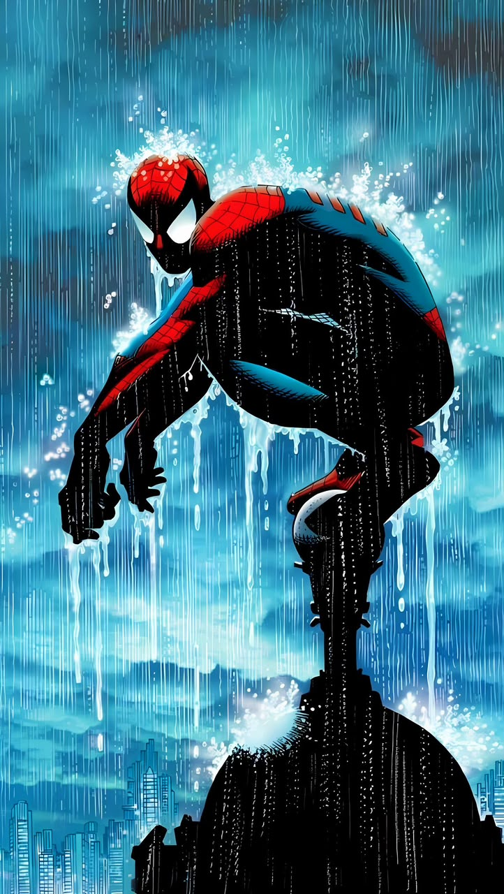

Peter
Parker
Fotógrafo, científico y protector de su ciudad. Peter intenta equilibrar sus responsabilidades personales con su promesa de estar allí cuando alguien necesita ayuda.
“WITH GREAT POWER…”
EL TREPAMUROS DE NUEVA YORK
Un gran poder conlleva
una gran responsabilidad.
El héroe y la persona que sostiene la telaraña.
Fotógrafo, científico y protector de su ciudad. Peter intenta equilibrar sus responsabilidades personales con su promesa de estar allí cuando alguien necesita ayuda.
 PETER PARKER 01
PETER PARKER 01

SPIDER-MAN 02Pasá el cursor sobre cada actor para revelar su traje.
 TOBEY MAGUIRE 2002
TOBEY MAGUIRE 2002
 ANDREW GARFIELD 2012
ANDREW GARFIELD 2012
 TOM HOLLAND 2016
TOM HOLLAND 2016
Una araña alterada por radiación le dio a Peter habilidades extraordinarias. Al principio las usó para beneficio propio; la muerte de su tío Ben le enseñó que mirar hacia otro lado también tiene consecuencias. Desde entonces, eligió poner sus poderes al servicio de los demás.
“Un gran poder conlleva una gran responsabilidad.”
Reflejos extraordinarios, ingenio y una voluntad inagotable.
Una alerta instintiva que le advierte del peligro inminente.
Fuerza sobrehumana, reflejos rápidos y equilibrio excepcional.
Puede sujetarse y desplazarse por distintas superficies.
Su talento para la ciencia lo ayuda a resolver problemas y crear tecnología.
Debajo de la máscara sigue siendo humano. El cansancio, las lesiones y el peso de proteger a sus seres queridos pueden ponerlo en riesgo. Sus lanzatelarañas también dependen de sus reservas de fluido.
Las conexiones que definen la vida del trepamuros.
Tía May — su familia y brújula moral.
Mary Jane Watson — amiga y compañera fundamental.
Johnny Storm — amigo y aliado de los Fantastic Four.
Los Avengers — equipo al que se ha unido en distintas etapas.
Green Goblin — Norman Osborn, uno de sus adversarios más personales.
Doctor Octopus — genio científico y rival recurrente.
Venom — un simbionte ligado a su pasado.
Kraven the Hunter — cazador obsesionado con derrotarlo.
Peter Parker clásico — el héroe de Queens que convirtió una pérdida en una promesa.
Miles Morales — otro Spider-Man, surgido del universo Ultimate y parte del multiverso arácnido.
Spider-Man 2099 — Miguel O’Hara, el héroe del Nueva York del futuro.
Superior Spider-Man — Otto Octavius usando el cuerpo y el nombre de Peter.
Spider-Gwen — Gwen Stacy, heroína de una realidad alternativa también conocida como Ghost-Spider.
¿Y si Spider-Man se unía a los Fantastic Four? — Peter convertía al equipo en los Fantastic Five. What If? (1977) #1
¿Y si Spider-Man conservaba sus seis brazos? — una mutación lo obligaba a vivir como héroe a tiempo completo. What If? (1989) #42
¿Y si Gwen Stacy sobrevivía? — Gwen descubría la identidad secreta de Peter y ambos se casaban. What If? (1977) #24
¿Y si Peter se convertía en Punisher? — la pérdida de Ben lo llevaba por un camino de justicia implacable. What If? The Punisher (2018) #1
Las sagas de Tobey Maguire y Andrew Garfield, el Spider-Man del Universo Cinematográfico de Marvel y las películas animadas Spider-Verse.
01—07Spider-Man (1994), The Spectacular Spider-Man, Ultimate Spider-Man y otras adaptaciones animadas.
TV / ANIMAmazing Fantasy #15, donde debutó en 1962; The Amazing Spider-Man; y arcos como Kraven’s Last Hunt y Spider-Verse.
1962—NOWOtras personas que asumieron la identidad de Spider-Man en distintas realidades y etapas.
Tras la muerte de Peter en el universo Ultimate, Miles decidió continuar su legado. Más tarde, también se convirtió en Spider-Man en el universo principal.
VER PERFIL MARVEL ↗Clon de Peter Parker, fue el Scarlet Spider y llegó a tomar el manto de Spider-Man cuando Peter se retiró temporalmente.
VER PERFIL MARVEL ↗Como Superior Spider-Man, ocupó el cuerpo de Peter y asumió su identidad, decidido a demostrar que podía ser un héroe más eficaz.
VER PERFIL MARVEL ↗Genetista del futuro que se convirtió en Spider-Man de 2099 para proteger a la gente de una Nueva York dominada por corporaciones.
VER PERFIL MARVEL ↗Tía May: "Nunca adivinarás quién quiere ser... Spider-Man. Él reconoce a un héroe cuando lo ve. Hay muy pocos personajes volando como él, salvando a viejas como yo. Y Dios sabe que los niños como Henry necesitan un héroe. Gente valiente, que se sacrifica, poniendo el ejemplo a todos. A todo el mundo le encanta un héroe. La gente hace cola por ellos, los ovaciona, grita sus nombres. Y años después, cuentan cómo estuvieron horas bajo la lluvia solo para ver al que les enseñó a aguantar un segundo más. Creo que todos tenemos un héroe adentro que nos mantiene honestos, nos da fuerza, nos hace nobles, y finalmente nos permite morir con orgullo. Aunque a veces tenemos que ser firmes y renunciar a lo que más queremos. Incluso a nuestros sueños. Spider-Man le dio eso a Henry, y él se pregunta a dónde se fue. Lo necesita."
CONSULTAR PERFIL OFICIAL DE MARVEL ↗ VOLVER AL INICIO ↑